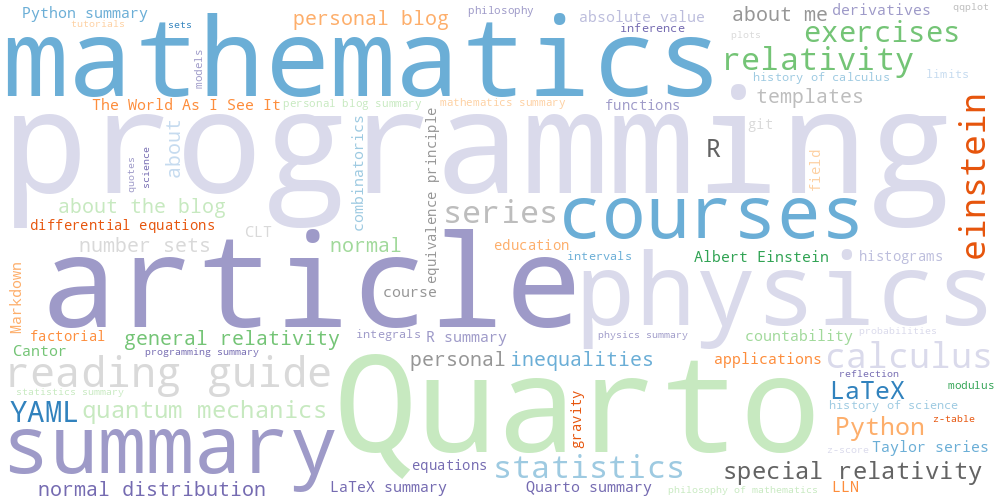

Tags

📚 All Tags
mathematics (11) courses (9) Quarto (8) reading guide (8) physics (7) summary (7) calculus (6) programação (6) article (5) einstein (5) statistics (5) exercises (4) fÃsica (4) sumário (4) Python (3) R (3) YAML (3) artigo (3) programming (3) relatividade (3) series (3) LaTeX (2) about (2) about me (2) about the blog (2) inequalities (2) normal (2) normal distribution (2) number sets (2) personal (2) quantum mechanics (2) relatividade especial (2) relativity (2) série (2) CLT (1) Cantor (1) LLN (1) Taylor series (1) absolute value (1) applications (1) combinatorics (1) countability (1) derivatives (1) differential equations (1) equations (1) factorial (1) field (1) functions (1) general relativity (1) gravidade (1) guia de leitura (1) histograms (1) history of calculus (1) history of science (1) inference (1) integrals (1) intervals (1) limits (1) mathematics summary (1) mecânica quântica (1) modulus (1) personal blog (1) personal blog summary (1) philosophy of mathematics (1) physics summary (1) plots (1) princÃpio da equivalência (1) probabilities (1) programming summary (1) qqplot (1) relatividade geral (1) sets (1) special relativity (1) statistics summary (1) sumário de LaTeX (1) sumário de Python (1) sumário de Quarto (1) sumário de R (1) z-score (1) z-table (1)